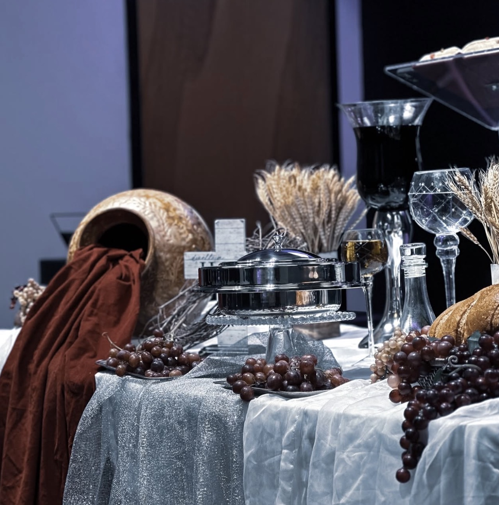
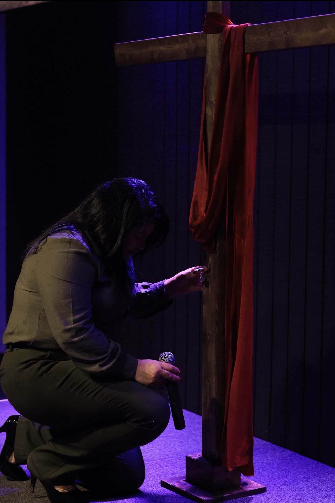
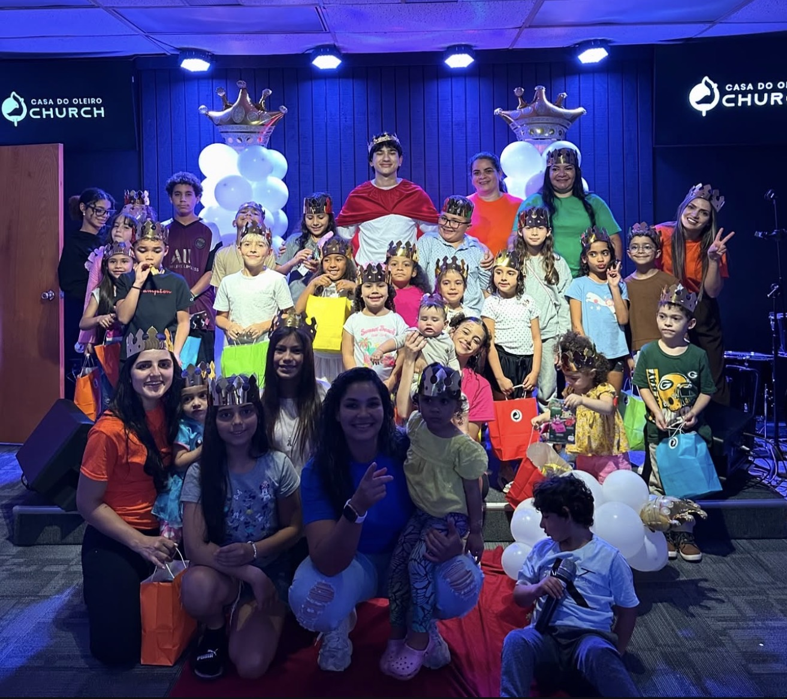
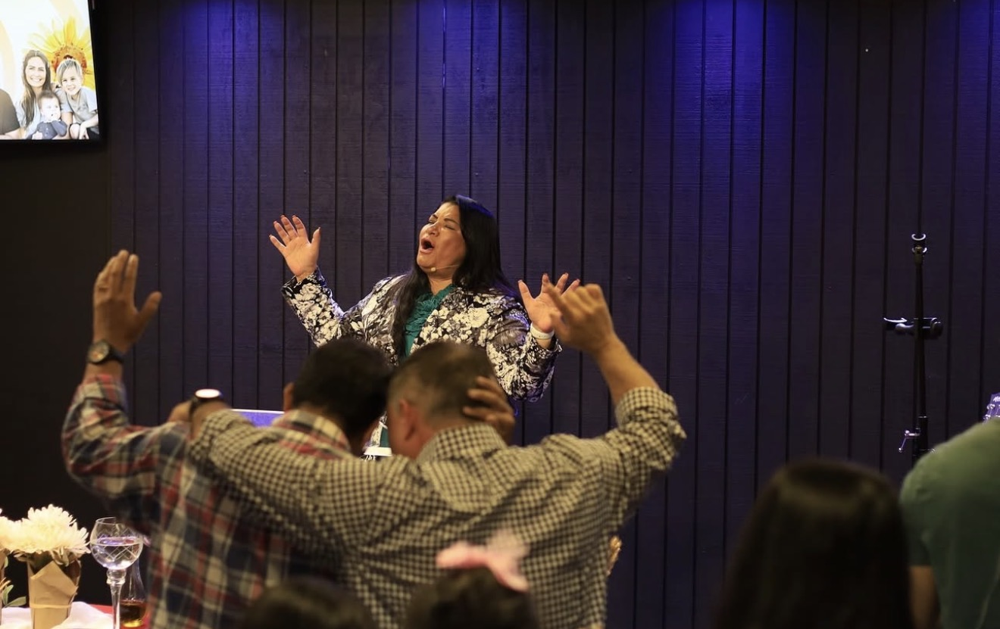

Moldados
pelo Oleiro

Restaurar vidas e espalhar o evangelho — uma comunidade brasileira em Marietta, convencida de que ninguém é descartável nas mãos do Oleiro.
Jeremias 18:6Tudo começa com um pedaço de barro.
O Oleiro pega o que o mundo descartou e começa a moldar. Não precisa ser perfeito. Só precisa estar nas mãos certas.


Ele te coloca no centro da roda.
A pressão das mãos d'Ele alinha o que estava torto. Dói um pouco. Mas é assim que se começa qualquer coisa que vai durar.
O barro sobe, e o vaso aparece.
Cada um de nós é único — moldado para conter algo que só nós podemos carregar.

Pronto pra ser cheio.
Vasos não existem pra serem admirados — existem pra carregar água viva. Esta é a Casa onde o barro vira vaso.
Quando
nos reunimos
2141 Kingston CT SE
Suite 108
Marietta, GA 30067 — Use a entrada lateral e procure pela Suite 108.
Como chegar →Pertencer
é começar.



Nossos
pastores
Quem está à frente da Casa, orando, ensinando e cuidando da família.

Pequenos grupos,
grandes histórias.
Casas abertas, semana inteira
Reuniões em casas de famílias por Marietta e cidades vizinhas. Bíblia aberta, café passado, e um lugar pra você ser conhecido pelo nome.
Ver gruposGeração Oleiro
Jovens dos 13 aos 25. Cultos próprios, retiros, e uma comunidade que entende o que é crescer hoje, com a Bíblia na mão.
Saiba maisEntre no nosso grupo
Avisos de cultos, palavras da semana, pedidos de oração e tudo que rola na família Casa do Oleiro — direto no seu WhatsApp.
Entrar no grupoVamos orar
por você.
Conte pra gente o que está pesando no seu coração. Nosso time de intercessão recebe seu pedido em silêncio, com cuidado, e ora durante a semana — sem julgamento, sem pauta.
Semeie
com a gente
Sua oferta sustenta os cultos, projetos sociais aqui em Marietta e o cuidado pastoral com cada família da Casa.